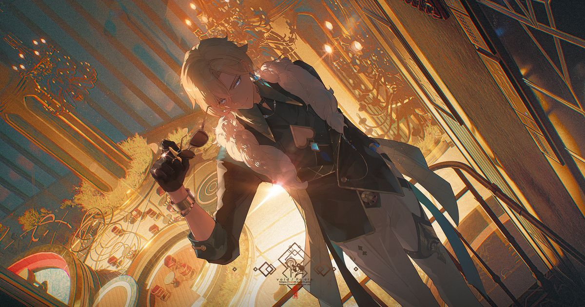
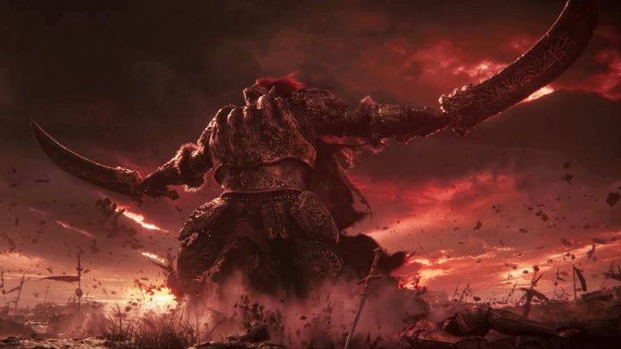

| 画像 |
紹介 |
.jpg) |
ミライドンがバトルする際のフォルムで、本来の姿。コンプリートモードとも呼ばれる。この姿でないと強さを発揮できない。リングやアンテナ、尻尾の先などはいずれも薄い黄色と青紫色と白色に光って電気的なエネルギーのような感じで、特にアンテナと尻尾の先は稲妻のような形状をしている。膝を折って足を折りたたんでおり、太ももの付け根にあるジェットエンジンのような器官を下に向けている。飛行して移動する。
|
|  |
スターピースカンパニー「戦略投資部」の高級幹部。「十の石心」の1人で、「博戯の砂金石」という基石を所持している。個性的かつリスクを好む性格で、常に笑顔を絶やさないが、その本心を人に見せることはない。運命の賭けによって今の地位を勝ち取った彼は、いつもどこか余裕があり、人生をハイリスク・ハイリターンな投資と見なしている。
|
|
 |
カーリアの女王レナラと黄金樹の英雄ラダゴンの子の一人。
ラダゴンがレナラを捨て、女王マリカの王配となった時、外戚としてデミゴッドとなった。
巨人に比類する体躯と父ラダゴンから受け継いだ赤髪が特徴。
母レナラからは魔術の才能を受け継いでおり、重力の魔術を習得している。
戦闘ではラダーンの体格では不釣り合いな程小さな痩せ馬に乗り、二刀一対の大剣と大弓、そして重力魔法を使って戦う。
|